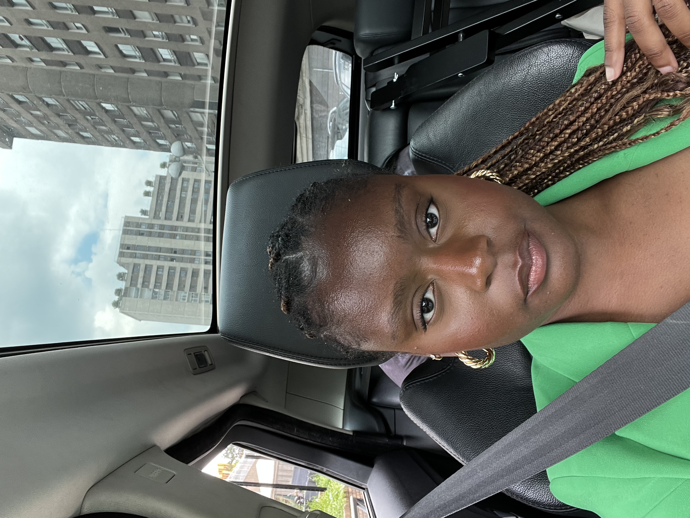
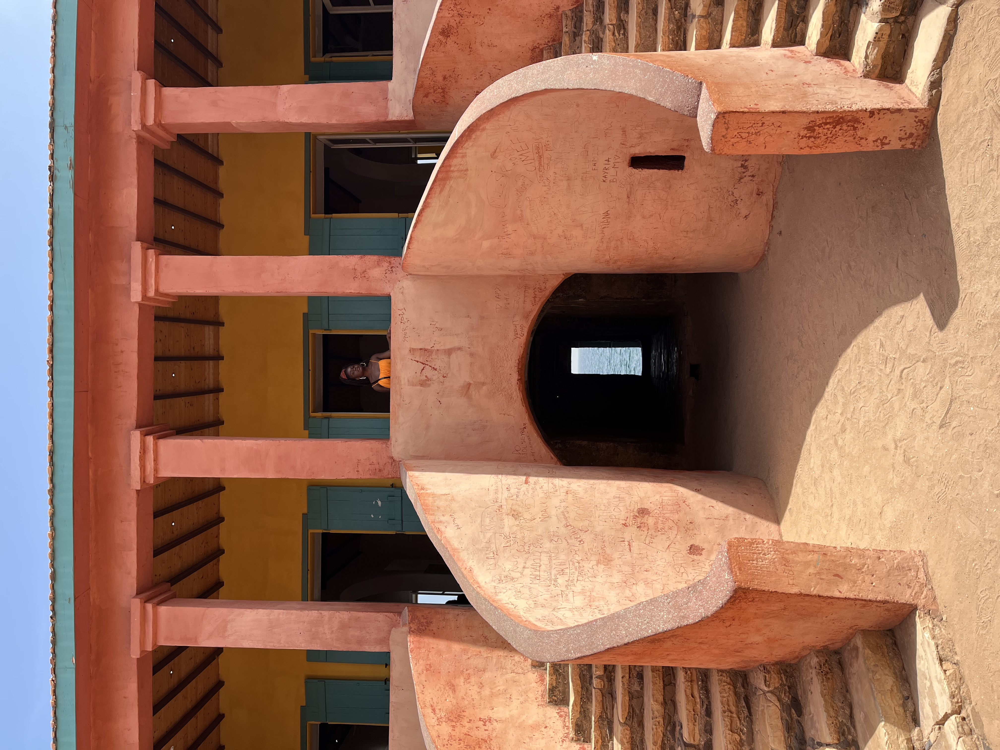
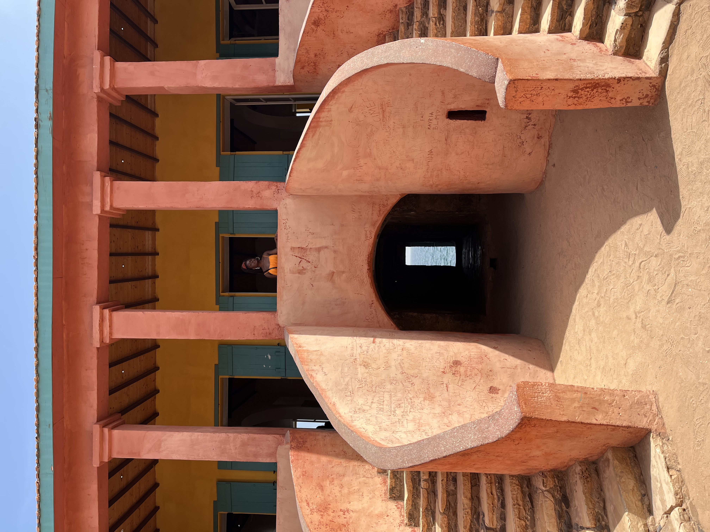

Salut, moi c'est Jessy 👋🏾
Rayonnante et souriante, mon ambition est de travailler dans le domaine de la grande distribution en Afrique.
Pour en savoir plus, clique ici✈️ M'instruire en voyageant ✈️
Voyager me permet d'ouvrir mon esprit et d'approfondir ma connaissance des autres cultures en les découvrant sur leur propre territoire. Cela me donne l'opportunité de revenir en France et de partager les connaissances acquises avec mon entourage, les encourageant ainsi à regarder plus loin que le bout de leur nez
 

🍟 Amoureuse de la nourriture 🍱
Je suis passionnée par la cuisine, tout comme mes amies. Ainsi, chaque semaine, nous explorons de nouveaux restaurants pour découvrir de nouvelles saveurs. De plus, l'année dernière, j'ai consacré mon mémoire à étudier les impacts visuels sur le plaisir de la dégustation.
Mes Sports Préférés
🥊 Boxe 🥊
La boxe française me permet de m'exprimer et de repousser mes limites. C'est une activité physique qui me permet de me dépenser tout en m'amusant.
🏃🏾♀️ Athlétisme 🏃🏾♀️
Je pratique activité physique qui me permet de me dépenser tout en m'amusant.